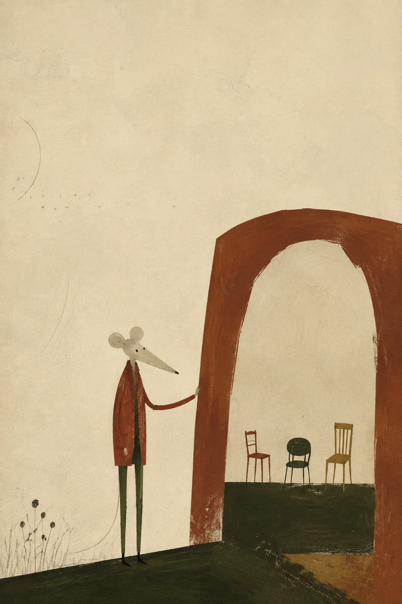
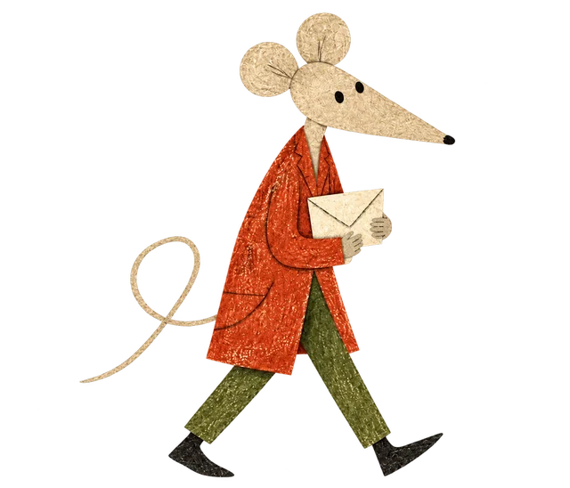
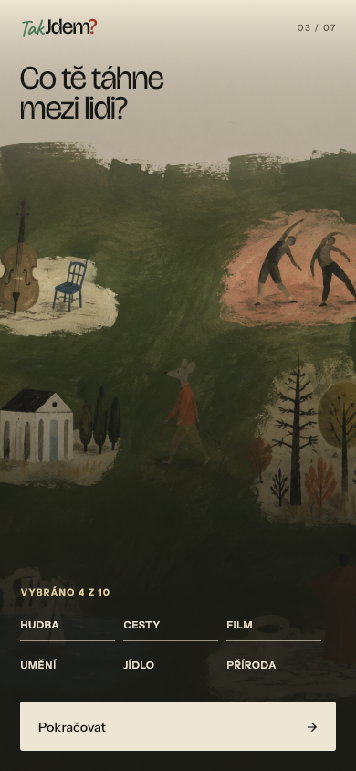
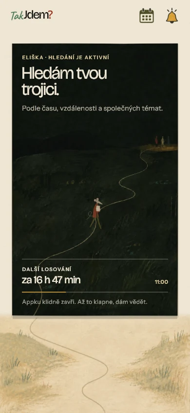
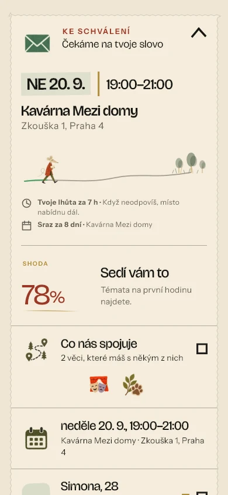
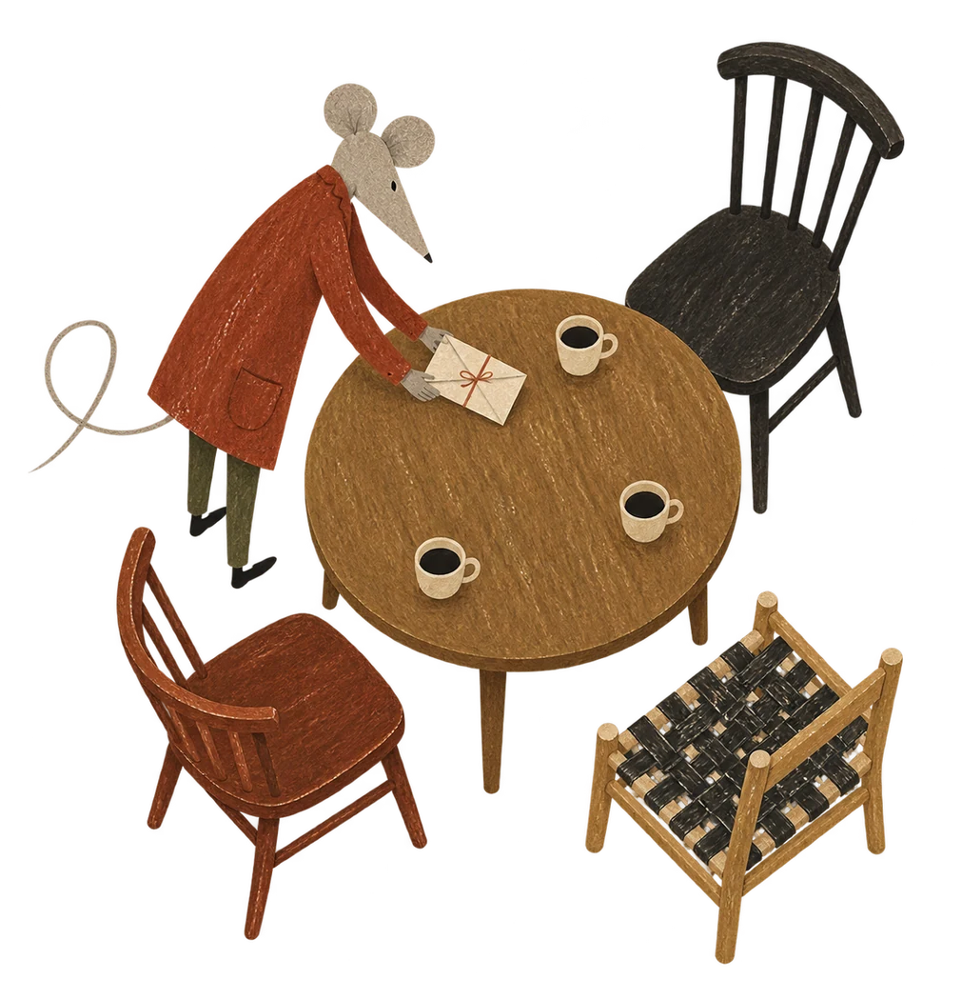

Žádost
Konkrétní termín a počet hostů.
TAK JDEM? PRO VAŠE MÍSTO
Aplikace, která propojí tři lidi se společnými zájmy a přivede je k jednomu stolu. Třeba právě u vás.
Připravujeme pilot v Praze pro dospělé 18+

Tady začínají přátelství.OD TELEFONU KE STOLU
Člověk zadá, co ho baví a kdy má čas. Jdem? hledá další dva lidi a navrhne čas i veřejné místo pro setkání.
Podnik se stává místem, kde se online domluva promění v osobní zážitek.
Malá skupina nabízí více témat a přirozenější začátek rozhovoru.
JAK TO FUNGUJE PRO ZÁKAZNÍKY
Od prvního otevření aplikace až ke společnému setkání.

ZÁKAZNÍCI / PRVNÍ KROK
Zákazník si připraví profil, vybere zájmy a označí, kdy má čas.
Společná témata
Zájmy pomohou najít lidi, se kterými si bude mít co říct.
Čas a okolí
Hledání respektuje společné volno a možnosti dojezdu.

ZÁKAZNÍCI / HLEDÁNÍ
Jdem? hledá trojici podle společných témat, času a vzdálenosti. Zákazník nemusí procházet profily ani vybírat ze seznamu lidí.
Aplikaci může zavřít. Jakmile je pozvánka připravená, dostane upozornění.
Méně času na displeji.
ZÁKAZNÍCI / SETKÁNÍ
Dva další lidé, konkrétní termín a veřejné místo. Setkání vzniká, když ho potvrdí všichni tři.
Každý se rozhodne
Zákazník pozvánku přijme nebo odmítne.
Potvrzená trojice přijde
V zapojeném podniku se k domluvě přidává potvrzení stolu.

JAK TO FUNGUJE PRO PODNIKY
Vy vytvoříte příjemné místo. Jdem? zařídí propojení lidí.

PODNIKY / KAŽDODENNÍ PROVOZ
V rozhraní podniku se objeví žádost o rezervaci. Potvrdíte ji, pokud máte pro skupinu místo.
Potvrzené stoly najdete v rezervacích. Profil podniku pomáhá udržet provozní údaje aktuální.
Podnik vidí počet lidí a křestní jméno pro rezervaci. Osobní profily hostů neprochází.
Konkrétní termín a počet hostů.
Stůl přijmete podle svých možností.
Připravíte stůl a přivítáte skupinu.
PODNIKY / PŘÍNOSY
Malé skupiny objevují místo, kam by je jinak možná nenapadlo zajít.
Konkrétní žádost vám dává přehled o termínu a velikosti skupiny.
Společné posezení vytváří prostor pro kávu, jídlo nebo další objednávku.
Příjemný první zážitek může být začátkem dalších návštěv.
Tohle jsou příležitosti spolupráce. Skutečnou návštěvnost a přínos ověří pilot.
PODNIKY / SPOLUPRÁCE
Hledáme kavárny, bistra, restaurace a další veřejná místa v Praze, kde se dá v klidu mluvit.
Představit svůj podnik ↗Probereme atmosféru, provoz a vhodné termíny.
Společně vyjasníme rezervace a podmínky pilotní spolupráce.
Vyzkoušíme provoz a získáme zpětnou vazbu od vás i hostů.
PODNIKY / VIZE A STRATEGIE
Chceme vybudovat síť míst, kam lidé přicházejí za společným zážitkem a kam se rádi vracejí.
Ověřit celý průběh od pozvánky po setkání s prvními podniky.
Vyhodnocovat potvrzené rezervace, zkušenost hostů a zpětnou vazbu podniků.
Rozšiřovat síť podle výsledků pilotu a místní poptávky.
Navržený směr rozvoje. Rozšíření a jeho tempo závisí na výsledcích pilotu.
STAŇTE SE MÍSTEM PRO NOVÁ SETKÁNÍ
Máte stůl pro tři a prostor pro příjemný rozhovor? Pojďme společně připravit první setkání.
Chci zapojit svůj podnik ↗podpora@takjdem.com